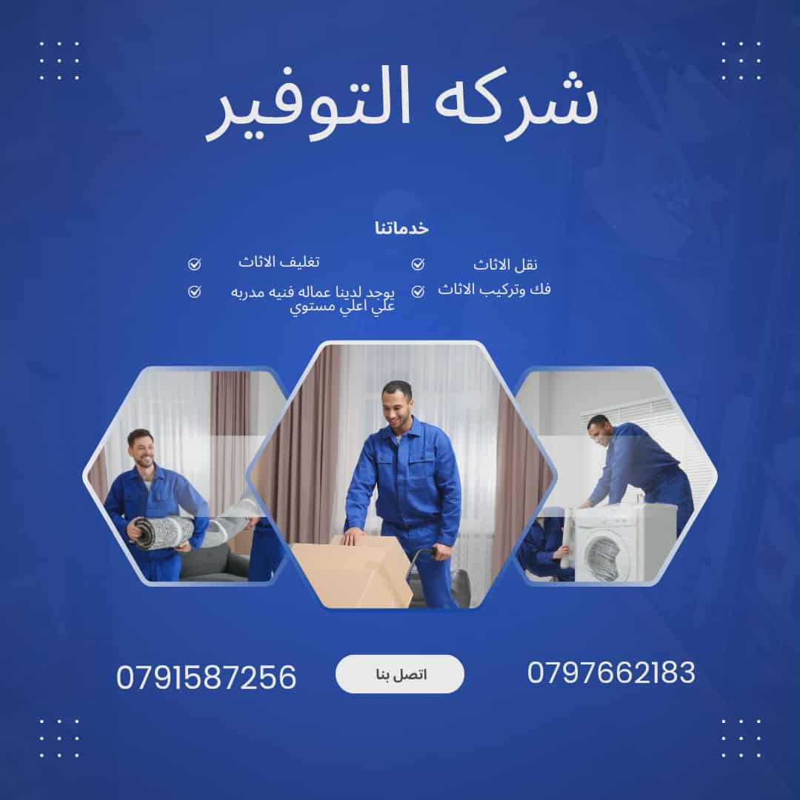

في شركة التوفير، نساعدك ليس فقط في الحصول على أقل سعر للنقل، بل نقدم لك أيضاً نصائح قيمة لتقليل التكاليف الإجمالية. إليك 5 طرق فعالة لتغليف أثاثك بنفسك بأمان واقتصاد:
1. ابدأ بتغليف العناصر الهشة بالبابلز
الأواني الزجاجية والتحف هي الأكثر عرضة للكسر. قم بلف كل قطعة على حدة باستخدام البابلز (لفائف الفقاعات الهوائية). يمكنك شراء البابلز بأسعار اقتصادية من قسمنا الخاص بمواد التغليف. لا تنسى وضع طبقة من ورق الحشو في قاع الكرتونة لامتصاص الصدمات.
2. استخدم الملابس والمناشف كحشو
بدلاً من شراء مواد حشو إضافية للكراتين، استغل ملابسك ومناشفك وبطانياتك. ضعها حول الأطباق والأغراض في الصناديق. هذه خطوة مزدوجة: توفير ثمن الحشو وتغليف ملابسك في نفس الوقت! هذا توفير حقيقي.
3. تغليف قطع الأثاث الكبيرة بالاسترتش رول
لحماية الأسطح الخشبية اللامعة من الخدوش والأتربة، استخدم الاسترتش رول. لفه بإحكام حول الطاولات، الكراسي، والألواح الجانبية. هذه الطريقة أسرع بكثير من استخدام البطانيات التقليدية وتوفر حماية ممتازة.
4. تجميع القطع الصغيرة في أكياس مُعلمة
مسامير، براغي، وأجزاء فك الأثاث. ضعها جميعاً في أكياس بلاستيكية صغيرة (Zip-lock) وقم بتعليم كل كيس باسم القطعة التي ينتمي إليها. هذا يسهل عمل النجارين لدينا عند التركيب ويوفر الوقت.
5. شراء الكراتين المُستخدمة بجودة عالية
لتقليل التكاليف، ابحث عن كراتين نقل عفش مستخدمة مرة واحدة وبحالة ممتازة. نحن في شركة التوفير نوفر هذا الخيار بأسعار اقتصادية. تأكد دائماً من متانتها وأنها نظيفة وجافة.